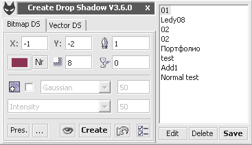

Create Shadow (SanM_Shadow)
Макрос так же может создавать внешнее свечение.
Основные возможности:
Создание растровых и векторных теней
Режимы наложения Add, Normal и Multiply для растровых теней
Возможность добавления шума в растровую тень
Сохранение часто используемых настроек в пресеты
Настройки хранятся в самом объекте тени
Функция быстрого просмотра, при которой формируется тень в 72 dpi
Опция Overprint для тени
Окно макроса может висеть фоном, не препятствую другой работе
Функция быстрого преобразования эффекта Corel Drop Shadow в растровое изображение (bitmap).
ВНИМАНИЕ!!! Купив макрос, вы будете получать все следующие версии бесплатно!!!
Для работы макроса требуется библиотека MSCOMCTL.OCX (Идёт вместе с Microsoft Office)
Также, эту библиотеку возможно установить отдельно (подробнее при покупке макроса).

fixed: Оптимизирован код.
Add: Выбор режимов наложения.
Add: Немного изменён внешний вид главного окна.
Add: Окно стало прозрачным (опционально).
Add: ProgressBar
fixed: Исправлен баг при сохранении пресета.
А теперь о дополнениях, которые хотелось бы увидеть в будущих версиях:
Функция быстрого просмотра, при которой формируется тень в 72 dpi - было бы лучше, если бы тень не создавалась а изменялась при изменение каких либо параметров или исчезала при отмене.
И было бы не плохо, если параметры можно было изменять не цифрами а стрелками как в Люстре.
1. Прокрутка цифровых значений колесиком мыши.
2. Выбор цвета тени пипеткой
Как купить-то?
blagokhar, судя по количеству продаж за 2 года, здесь макрос практически ни кому не нужен — видимо качество теней на постсоветском пространстве волнует очень не могих :D Исходя из этого здесь макрос больше не продаётся, и вряд ли когда либо что-то изменится.
Зато макрос продаётся "за бугром". Если есть возможность, можно купить там:
Купить Create Shadow
Макрос в X5 перестал создавать тень для картинок (PSD), только вектор :(
blagokhar, подробности? А то я к сожалению не телепат :(
Выделил изображение PSD, запустил макрос и при нажатии на "End" Corel зависает. Возможно проблема с размером картинки.
blagokhar, скинь файл мне на почту (адрес у тя на почте), я у себя гляну.
Страницы